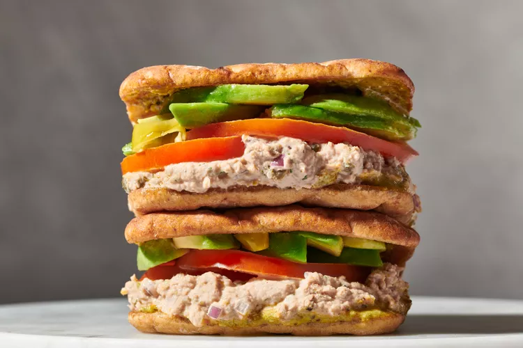

Tunacado

Description
TikTok is losing its mind over a tuna sandwich, and there are plenty of wonderful reasons why. As a fellow tuna salad fanatic, I was delighted to see the Joe & the Juice tunacado taking over my feed but skeptical at what new hot take the internet could take on this sandwich icon.
You’re probably thinking, “I thought they just did juices?” SAME. Nonetheless, this sandwich's appeal lies in its blissful blend of textures. A crispy flatbread encases a vibrant tuna mixture spiked with just the right amount of heat and whipped to a mousse-like consistency, then layered with an unorthodox pesto, avocado, and tomato.
The fluffiness of the tuna salad is all thanks to the addition of mayo and the power of a food processor. You can opt for the classic fork-mash technique, but I suggest you give your food processor at least one chance at the task to taste the difference.
Ingredients
- 1/4 cup pesto
- 1/4 cup mayonnaise
- 1 tablespoon chili crunch
- 1 teaspoon honey
- 1/2 tablespoon lemon juice
- Fine salt and ground black pepper, to taste
- 5 ounces canned tuna, drained
- 3 tablespoons mayonnaise
- 1 1/2 teaspoons dijon mustard
- 1 tablespoon lemon zest (from 1 lemon)
- 1 1/2 teaspoons lemon juice
- 2 cloves garlic
- 1 tablespoon drained capers
- 2 teaspoons anchovy paste, or 3 anchovy filets
- 1 tablespoon dried dill or 2 sprigs fresh dill
- 1/4 cup diced red onion
- 1/4 teaspoon fine salt, more to taste
- 1/4 teaspoon ground black pepper
- 4 thin slices whole wheat flatbread, Sourdough, or focaccia
- 4 slices tomato
- 1 large ripe avocado, sliced
- Pickled sliced banana peppers, for serving
Steps
- Gather the ingredients.
- Place the tuna, mayonnaise, mustard, lemon zest and juice, garlic cloves, capers, anchovy, and dill in the bowl of a food processor. Pulse on high until smooth and an almost “whipped” consistency is achieved, stopping as needed to scrape down the sides of the food processor, about 1 minute.
- Stir in the chopped onions, salt, and pepper. Adjust the seasoning as desired.
- Preparing the bread can depend on the type of bread chosen—the end result should be thin and crispy. Heat 1 tablespoon oil in a large skillet over medium-high, then add 2 pieces of bread at a time, cut side-down. Weigh down using a small skillet or pot and cook until the pieces are golden brown and crispy, 2 to 3 minutes. Remove from the skillet (just brown the interior of the bread) and toast the remaining 2 slices.
- To assemble the sandwiches, divide and spread the spicy pesto aioli over the toasted side of each piece of bread.
- Divide and spread the tuna mixture across two pieces of the bread. Then layer each tuna-topped piece of bread with 2 slices of tomato and as much avocado as desired.
- Top with banana peppers for a slightly spicy-briney punch, if desired. Close sandwiches, slice in half and serve.